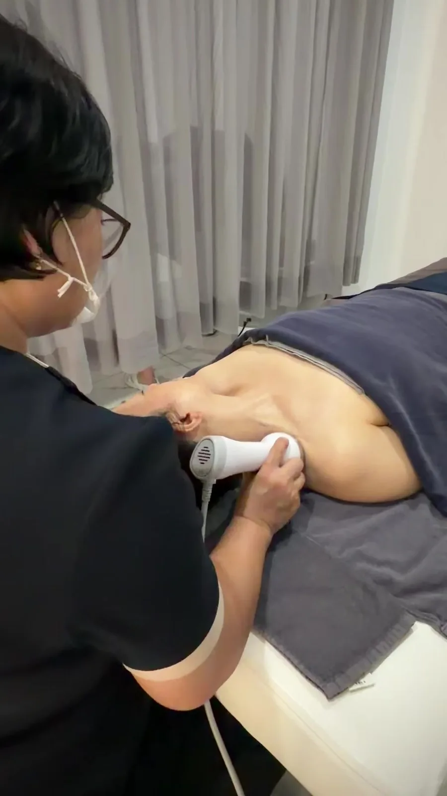
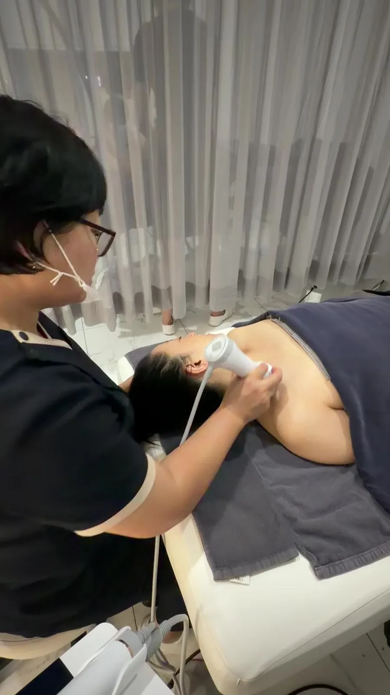

SIGNATURE METHOD
조막얼굴메소드®
해부학을 기반으로 대표원장이 직접 개발하고 상표로 등록한 아르쎄만의 윤곽관리 프로토콜입니다.
WHY JOMAK METHOD
얼굴 라인은
근육과 근막이 만듭니다
같은 골격이라도 씹는 습관, 자세, 순환 상태에 따라 얼굴의 윤곽은 달라집니다. 조막얼굴메소드®는 윤곽을 흐트러뜨리는 원인을 해부학적으로 찾아 근육과 근막의 균형을 바로잡는 데 집중합니다.
- 대표원장의 1:1 얼굴 진단으로 시작합니다
- 저작근·광대 주변·목까지 이어지는 흐름을 함께 관리합니다
- 필요한 경우 정품 장비를 더해 관리의 깊이를 설계합니다

조막얼굴메소드®
해부학을 바탕으로 직접 개발하고 상표로 등록한, 아르쎄의 윤곽관리입니다.
진단
좌우 비율과 근육의 긴장을 원장이 직접 확인합니다.




BEFORE & AFTER
관리 전후 비교
가운데 손잡이를 좌우로 움직여 관리 전후의 얼굴 라인을 비교해 보세요.

 BEFOREAFTER
BEFOREAFTER
실제 고객 관리 전후 사진입니다. 개인에 따라 결과는 다를 수 있습니다.